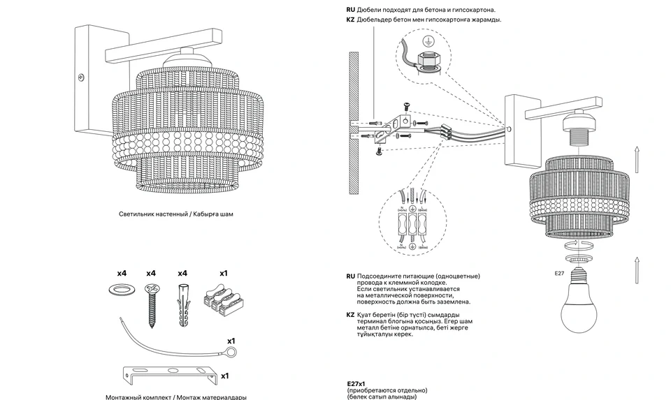

Перевожу устройство продукта в понятные чертежи, инструкции и схемы сборки. Соединяю техническую точность с визуальной иерархией.
Векторные чертежиСхемы сборкиПечатные и электронные инструкции
ЖИВАЯ ГАЛЕРЕЯ / 10
Листайте, наводите, открывайте. На телефоне — свайп и нажатие.

01
Графика и инструкции / 01
Настенный светильник
Авторская схема настенного светильника: фактурный плафон, кронштейн, монтажный комплект и последовательность установки. Разнесённые детали делают устройство и сборку наглядными.
Паспорт подвесной люстры «Верона»: общий вид, монтажный комплект и узлы крепления. Детали и выносные фрагменты показывают подключение и порядок сборки.
Паспорт потолочной люстры «Палермо»: устройство светильника, крепёж и монтажная планка, установка плафонов и ламп. Схемы соединены с техническими характеристиками в печатную инструкцию.
Техническая графика подвесной люстры: общий вид, крепёж, монтажная планка и последовательность сборки плафона. В кейсе — схемы крупным планом и полный паспорт изделия.
Паспорт напольного светильника: фактурный плафон, опоры треноги, крепёж и установка лампы. Авторские схемы показывают составные части и порядок сборки торшера.
Инструкция для торшера: сборка стойки и основания, соединение декоративных элементов и установка ламп. Иллюстрации выстроены в последовательность сборки.
Инструкция для комплекта светодиодной ленты: состав комплекта, устройство пульта, резка и схема подключения. Авторские векторные рисунки помогают разобраться в установке и управлении.
Инструкция для инфракрасного выключателя: устройство датчика, правильное положение при монтаже и схема подключения к светодиодной ленте. Рисунки и пояснения собраны в двуязычный паспорт.
Двенадцатистраничный паспорт электрического конвектора «Ультра»: внешний вид, размеры, установка опор и настенное крепление, органы управления и правила эксплуатации.